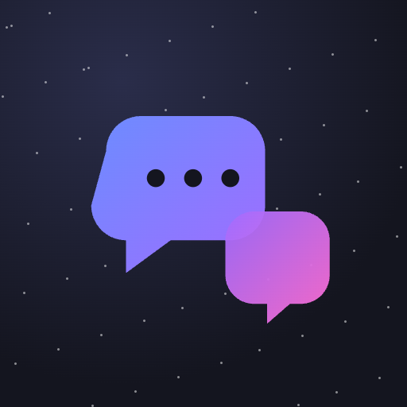

Lantern matching
Memorization
Assembly Logic
Hex Puzzle
Card Games
Cozy Logic Puzzle

Multiplayer Messaging
Loading…
This game didn't load.
It may be offline right now, or still deploying. Games inside the arcade need a connection.